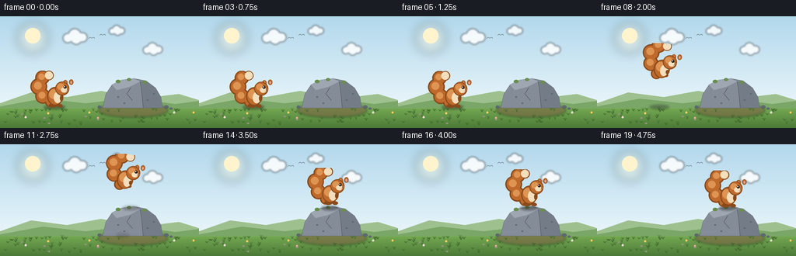
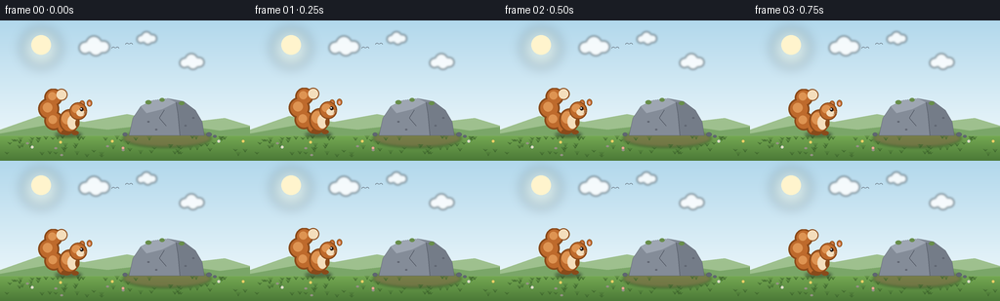

CODING AGENTS AS PIXEL WORLD MODELS
traex/Seed-2.1-Pro-0915 · dynamic_spatial_relationship_0025
点击播放 · 原生 RGB 像素
逐轮保存的候选
回放视频、检查图与代码变化。
每份候选均可单独播放。实际图片检查记录在下方工具轨迹中。
候选 01播放与检查图
点击播放 · 原生 RGB 像素


展开代码变化
--- 上一保存版本
+++ 本次保存版本
@@ -0,0 +1,344 @@
+"""Generate: a squirrel stands left of a rock, then jumps onto the rock.
+
+Pure procedural rendering (PIL/numpy). The scene is drawn at 4x resolution and
+downscaled per frame for smooth edges. Run with: python generate.py
+"""
+import math
+from pathlib import Path
+
+import numpy as np
+from PIL import Image, ImageDraw, ImageFilter
+
+import artifact_io
+
+W, H, N, FPS = 256, 144, 20, 4.0
+SS = 4 # supersampling factor
+SW, SH = W * SS, H * SS
+GROUND_Y = 118 # ground surface in base-resolution pixels
+ROCK_TOP = 81 # rock top surface where the squirrel lands
+X_START, X_END = 70, 168 # squirrel anchor x before / after the jump
+rng = np.random.default_rng(20261110)
+
+# Palette
+SKY_TOP = np.array([178, 216, 236])
+SKY_BOT = np.array([234, 246, 250])
+SUN_CORE = (255, 244, 205)
+HILL_FAR = (158, 192, 142)
+HILL_NEAR = (122, 166, 104)
+GRASS_TOP = np.array([116, 168, 82])
+GRASS_BOT = np.array([74, 120, 54])
+DIRT = (122, 96, 66)
+ROCK_BASE = (132, 140, 152)
+ROCK_LIGHT = (158, 166, 178)
+ROCK_DARK = (96, 102, 114)
+ROCK_LINE = (74, 80, 92)
+MOSS = (104, 142, 74)
+FUR = (190, 106, 44)
+FUR_DARK = (138, 74, 26)
+FUR_LIGHT = (222, 148, 82)
+CREAM = (244, 222, 188)
+PINK = (228, 168, 158)
+BLACK = (38, 28, 24)
+
+
+def smoothstep(t):
+ return t * t * (3 - 2 * t)
+
+
+# ---------------------------------------------------------------- background
+def make_background():
+ # vertical sky + grass gradient built at base res, then upscaled
+ grad = np.zeros((H, W, 3), dtype=np.float32)
+ for y in range(H):
+ if y < GROUND_Y:
+ t = y / GROUND_Y
+ grad[y, :] = SKY_TOP * (1 - t) + SKY_BOT * t
+ else:
+ t = (y - GROUND_Y) / (H - GROUND_Y)
+ grad[y, :] = GRASS_TOP * (1 - t) + GRASS_BOT * t
+ img = Image.fromarray(grad.astype(np.uint8)).resize((SW, SH), Image.BILINEAR)
+
+ def s(v):
+ return v * SS
+
+ # sun with soft glow
+ glow = Image.new("RGBA", (SW, SH), (0, 0, 0, 0))
+ gd = ImageDraw.Draw(glow)
+ gd.ellipse([s(22), s(8), s(62), s(48)], fill=(255, 244, 205, 70))
+ glow = glow.filter(ImageFilter.GaussianBlur(s(6)))
+ img = Image.alpha_composite(img.convert("RGBA"), glow)
+ d = ImageDraw.Draw(img)
+ d.ellipse([s(32), s(15), s(52), s(35)], fill=SUN_CORE)
+
+ # clouds (blurred white puffs on a layer)
+ cloud_layer = Image.new("RGBA", (SW, SH), (0, 0, 0, 0))
+ cd = ImageDraw.Draw(cloud_layer)
+ for cx, cy, scale in [(96, 26, 1.0), (196, 42, 0.8), (150, 18, 0.65)]:
+ for dx, dy, r in [(-9, 2, 6), (0, -2, 8), (10, 1, 6), (2, 3, 7)]:
+ cd.ellipse([s(cx + dx * scale - r * scale), s(cy + dy * scale - r * scale),
+ s(cx + dx * scale + r * scale), s(cy + dy * scale + r * scale)],
+ fill=(255, 255, 255, 215))
+ cloud_layer = cloud_layer.filter(ImageFilter.GaussianBlur(s(1.2)))
+ img = Image.alpha_composite(img, cloud_layer)
+ d = ImageDraw.Draw(img)
+
+ # two distant birds
+ for bx, by in [(118, 30), (132, 26)]:
+ d.arc([s(bx - 4), s(by - 3), s(bx), s(by + 2)], 200, 330,
+ fill=(90, 100, 110), width=max(1, s(1) // 2))
+ d.arc([s(bx), s(by - 3), s(bx + 4), s(by + 2)], 210, 340,
+ fill=(90, 100, 110), width=max(1, s(1) // 2))
+
+ # rolling hills behind the ground line
+ d.polygon([(0, s(112)), (s(40), s(98)), (s(86), s(104)), (s(130), s(96)),
+ (s(180), s(106)), (s(230), s(100)), (SW, s(108)),
+ (SW, s(GROUND_Y)), (0, s(GROUND_Y))], fill=HILL_FAR)
+ d.polygon([(0, s(116)), (s(55), s(106)), (s(110), s(112)), (s(170), s(105)),
+ (s(225), s(113)), (SW, s(109)), (SW, s(GROUND_Y)), (0, s(GROUND_Y))],
+ fill=HILL_NEAR)
+
+ # dirt patch under the rock
+ patch = Image.new("RGBA", (SW, SH), (0, 0, 0, 0))
+ pd = ImageDraw.Draw(patch)
+ pd.ellipse([s(126), s(112), s(216), s(130)], fill=DIRT + (150,))
+ patch = patch.filter(ImageFilter.GaussianBlur(s(1.5)))
+ img = Image.alpha_composite(img, patch)
+ d = ImageDraw.Draw(img)
+
+ # grass tufts, flowers and pebbles (deterministic)
+ for _ in range(70):
+ gx = int(rng.integers(4, W - 4))
+ gy = int(rng.integers(GROUND_Y + 3, H - 3))
+ blade = int(rng.integers(2, 5))
+ col = tuple(int(c) for c in (GRASS_BOT * 0.85))
+ for k in range(3):
+ d.line([s(gx), s(gy), s(gx + (k - 1) * 2), s(gy - blade)],
+ fill=col, width=max(1, s(1) // 2))
+ for _ in range(9):
+ fx = int(rng.integers(6, W - 6))
+ fy = int(rng.integers(GROUND_Y + 6, H - 8))
+ if 128 < fx < 214:
+ continue
+ petal = [(236, 198, 92), (228, 138, 158), (222, 222, 240)][int(rng.integers(0, 3))]
+ d.ellipse([s(fx - 1.4), s(fy - 1.4), s(fx + 1.4), s(fy + 1.4)], fill=petal)
+ d.ellipse([s(fx - 0.6), s(fy - 0.6), s(fx + 0.6), s(fy + 0.6)],
+ fill=(240, 220, 120))
+ for _ in range(12):
+ px = int(rng.integers(4, W - 4))
+ py = int(rng.integers(GROUND_Y + 4, H - 4))
+ if 128 < px < 214:
+ continue
+ d.ellipse([s(px - 1.5), s(py - 1), s(px + 1.5), s(py + 1)],
+ fill=(150, 144, 134))
+
+ img = draw_rock(img)
+ return img.convert("RGB")
+
+
+def draw_rock(img):
+ d = ImageDraw.Draw(img)
+
+ def s(v):
+ return v * SS
+
+ pts = [(136, 100), (144, 88), (156, 82), (172, 80), (188, 83),
+ (200, 92), (207, 104), (209, 118), (132, 118)]
+ poly = [(s(x), s(y)) for x, y in pts]
+ d.polygon(poly, fill=ROCK_BASE, outline=ROCK_LINE)
+ # sunlit top-left facet
+ d.polygon([(s(x), s(y)) for x, y in
+ [(144, 88), (156, 82), (172, 80), (180, 84), (166, 91), (150, 95)]],
+ fill=ROCK_LIGHT)
+ # shaded right facet
+ shade = Image.new("RGBA", (SW, SH), (0, 0, 0, 0))
+ sd = ImageDraw.Draw(shade)
+ sd.polygon([(s(x), s(y)) for x, y in
+ [(180, 84), (188, 83), (200, 92), (207, 104), (209, 118),
+ (184, 118), (182, 96)]],
+ fill=ROCK_DARK + (110,))
+ img = Image.alpha_composite(img, shade)
+ d = ImageDraw.Draw(img)
+ # facet edges, a crack, and a few specks
+ d.line([s(180), s(84), s(182), s(96), s(184), s(118)],
+ fill=ROCK_LINE, width=max(1, s(1) // 2))
+ d.line([s(168), s(92), s(163), s(100), s(170), s(108)],
+ fill=ROCK_LINE, width=max(1, s(1) // 2))
+ for sx, sy in [(152, 104), (190, 108), (160, 112), (198, 100)]:
+ d.ellipse([s(sx - 1.2), s(sy - 0.9), s(sx + 1.2), s(sy + 0.9)], fill=ROCK_DARK)
+ # moss along the top edge
+ for mx, my, r in [(152, 84, 3.2), (166, 81.5, 2.6), (186, 85, 2.8)]:
+ d.ellipse([s(mx - r), s(my - r * 0.7), s(mx + r), s(my + r * 0.7)], fill=MOSS)
+ # small stones at the base
+ for bx, by, r in [(128, 117, 2.4), (214, 117, 2.8), (220, 119, 1.8)]:
+ d.ellipse([s(bx - r), s(by - r * 0.8), s(bx + r), s(by + r * 0.8)],
+ fill=ROCK_DARK, outline=ROCK_LINE)
+ return img
+
+
+# ---------------------------------------------------------------- squirrel
+CANVAS = 96 # local sprite canvas size in base units
+C = CANVAS / 2 # anchor sits at the canvas centre
+
+
+def sprite_ellipse(d, cx, cy, rx, ry, fill, outline=None, width=1.0):
+ box = [SS * (C + cx - rx), SS * (C + cy - ry),
+ SS * (C + cx + rx), SS * (C + cy + ry)]
+ d.ellipse(box, fill=fill, outline=outline, width=max(1, int(width * SS)))
+
+
+def sprite_line(d, x1, y1, x2, y2, fill, width=1.0):
+ d.line([SS * (C + x1), SS * (C + y1), SS * (C + x2), SS * (C + y2)],
+ fill=fill, width=max(1, int(width * SS)))
+
+
+TAIL_IDLE = [(-5, -8), (-15, -14), (-21, -26), (-17, -38), (-9, -41)]
+TAIL_UP = [(-5, -8), (-14, -20), (-16, -34), (-8, -44), (2, -45)]
+TAIL_RADII = [5.5, 8, 9, 7.5, 4.5]
+
+
+def draw_squirrel(pose, tail_lift, tail_sway, tuck):
+ layer = Image.new("RGBA", (CANVAS * SS, CANVAS * SS), (0, 0, 0, 0))
+ d = ImageDraw.Draw(layer)
+ sq = pose # 0 = relaxed, 1 = fully squashed/crouching
+
+ # tail spine: interpolate idle vs raised poses, add sway toward the tip
+ spine = []
+ for i, (p0, p1) in enumerate(zip(TAIL_IDLE, TAIL_UP)):
+ x = p0[0] * (1 - tail_lift) + p1[0] * tail_lift
+ y = p0[1] * (1 - tail_lift) + p1[1] * tail_lift
+ sway = tail_sway * (i / (len(TAIL_IDLE) - 1)) ** 2
+ spine.append((x + sway, y))
+ # outline pass, fur pass, inner highlight, cream tip
+ for pts, radii, col in [(spine, [r + 1.7 for r in TAIL_RADII], FUR_DARK),
+ (spine, TAIL_RADII, FUR)]:
+ for (x, y), r in zip(pts, radii):
+ sprite_ellipse(d, x, y, r, r, col)
+ for (x, y), r in list(zip(spine, TAIL_RADII))[1:-1]:
+ sprite_ellipse(d, x - 1.2, y - 1.2, r * 0.55, r * 0.55, FUR_LIGHT)
+ sprite_ellipse(d, spine[-1][0], spine[-1][1], TAIL_RADII[-1] + 0.6,
+ TAIL_RADII[-1] + 0.6, CREAM)
+
+ # legs / feet (tucked while airborne)
+ if tuck > 0.5:
+ sprite_ellipse(d, 1, -8, 3.4, 2.6, FUR_DARK)
+ sprite_ellipse(d, 7.5, -7.5, 2.8, 2.2, FUR_DARK)
+ else:
+ sprite_ellipse(d, -2 + 1.5 * sq, -3.2, 5.2, 2.7, FUR_DARK)
+ sprite_ellipse(d, 7 + 1.0 * sq, -2.6, 3.6, 2.3, FUR_DARK)
+ sprite_line(d, -4, -3.4, -4, -1.6, FUR_DARK, 0.7)
+ sprite_line(d, -1, -3.4, -1, -1.4, FUR_DARK, 0.7)
+
+ # body (squash on crouch / landing)
+ bx, by = 1, -15 + 2.2 * sq
+ brx, bry = 9 * (1 + 0.16 * sq), 10.5 * (1 - 0.2 * sq)
+ sprite_ellipse(d, bx, by, brx + 1.3, bry + 1.3, FUR_DARK)
+ sprite_ellipse(d, bx, by, brx, bry, FUR)
+ sprite_ellipse(d, bx - 2.2, by - 2.6, brx * 0.62, bry * 0.6, FUR_LIGHT)
+ sprite_ellipse(d, bx + 3.2, by + 1.6, 5.0, 7.2 * (1 - 0.15 * sq), CREAM)
+
+ # front arm
+ if tuck > 0.5:
+ sprite_ellipse(d, 8.5, -12, 2.0, 2.6, FUR_DARK)
+ else:
+ sprite_ellipse(d, 9.2, -12.5 + 1.5 * sq, 2.1, 3.8, FUR_DARK)
+
+ # head, ears, face
+ hx, hy = 10, -25 + 2.6 * sq
+ for ex, ey in [(5.3, -7.4), (12.8, -8.1)]:
+ sprite_ellipse(d, hx + ex - 1.2, hy + ey, 2.7, 3.5, FUR_DARK)
+ sprite_ellipse(d, hx + ex - 1.2, hy + ey, 2.2, 2.9, FUR)
+ sprite_ellipse(d, hx + ex - 1.2, hy + ey + 0.4, 1.1, 1.7, PINK)
+ sprite_ellipse(d, hx, hy, 7.8 + 1.2, 7.8 + 1.2, FUR_DARK)
+ sprite_ellipse(d, hx, hy, 7.8, 7.8, FUR)
+ sprite_ellipse(d, hx - 1.8, hy - 2.2, 4.6, 4.2, FUR_LIGHT)
+ sprite_ellipse(d, hx + 2.4, hy + 2.0, 4.1, 3.4, CREAM)
+ sprite_ellipse(d, hx + 3.6, hy - 1.8, 1.8, 1.8, BLACK)
+ sprite_ellipse(d, hx + 3.1, hy - 2.3, 0.7, 0.7, (255, 255, 255))
+ sprite_ellipse(d, hx + 7.3, hy + 1.4, 1.2, 1.0, FUR_DARK)
+ sprite_line(d, hx + 6.6, hy + 2.6, hx + 5.2, hy + 3.3, FUR_DARK, 0.7)
+ sprite_line(d, hx + 6.8, hy + 0.6, hx + 10.2, hy + 0.2, CREAM, 0.6)
+ sprite_line(d, hx + 6.8, hy + 1.6, hx + 10.0, hy + 1.9, CREAM, 0.6)
+ return layer
+
+
+def add_shadow(img, x, y, alpha, rx):
+ layer = Image.new("RGBA", (SW, SH), (0, 0, 0, 0))
+ sd = ImageDraw.Draw(layer)
+ sd.ellipse([(x - rx) * SS, (y - 3) * SS, (x + rx) * SS, (y + 3) * SS],
+ fill=(30, 34, 28, alpha))
+ layer = layer.filter(ImageFilter.GaussianBlur(SS * 1.4))
+ return Image.alpha_composite(img, layer)
+
+
+# ---------------------------------------------------------------- animation
+def frame_parameters(f):
+ """Return anchor x/y, squash, tail lift/sway, tuck, tilt for frame f."""
+ bob = -math.sin(f * 1.15) * 1.1
+ if f <= 5: # idle on the ground, breathing + tail sway
+ return X_START, GROUND_Y + bob, 0.0, 0.18, math.sin(f * 0.9) * 2.2, 0.0, 0.0
+ if f == 6: # crouch before takeoff
+ return X_START, GROUND_Y, 0.9, 0.1, -1.0, 0.0, 0.0
+ if 7 <= f <= 12: # parabolic flight
+ t = (f - 7) / 5
+ e = smoothstep(t)
+ x = X_START + (X_END - X_START) * e
+ y = (1 - t) * GROUND_Y + t * ROCK_TOP - 44 * 4 * t * (1 - t)
+ tilt = -14 * math.sin(math.pi * t)
+ return x, y, 0.0, 1.0, 1.5, 1.0, tilt
+ if f == 13: # landing contact squash
+ return X_END, ROCK_TOP, 0.75, 0.7, 0.0, 0.0, 0.0
+ if f == 14: # little rebound
+ return X_END, ROCK_TOP - 2.5, 0.2, 0.55, 1.0, 0.0, 0.0
+ # settled on top of the rock
+ bob2 = -math.sin((f - 14) * 1.1) * 1.0
+ return X_END, ROCK_TOP + bob2, 0.0, 0.35, math.sin(f * 0.8) * 2.0, 0.0, 0.0
+
+
+def main():
+ bg = make_background()
+ frames = []
+ for f in range(N):
+ x, y, sq, lift, sway, tuck, tilt = frame_parameters(f)
+ img = bg.copy().convert("RGBA")
+
+ # contact shadow: ground shadow fades out across the jump, rock-top
+ # shadow fades in as the squirrel approaches its landing spot
+ if f <= 6:
+ img = add_shadow(img, x, GROUND_Y - 1, 110, 14)
+ elif 7 <= f <= 12:
+ t = (f - 7) / 5
+ img = add_shadow(img, x, GROUND_Y - 1, int(110 * (1 - 0.8 * t)),
+ max(6, 14 * (1 - 0.45 * t)))
+ a = int(120 * smoothstep(max(0, (t - 0.55) / 0.45)))
+ if a:
+ img = add_shadow(img, X_END, ROCK_TOP + 1, a, 11)
+ else:
+ img = add_shadow(img, x, ROCK_TOP + 1, 120, 11)
+
+ sprite = draw_squirrel(sq, lift, sway, tuck)
+ if tilt:
+ sprite = sprite.rotate(tilt, resample=Image.BICUBIC, expand=False)
+ ox = int(round((x - C) * SS))
+ oy = int(round((y - C) * SS))
+ img.alpha_composite(sprite, (ox, oy))
+
+ frames.append(np.asarray(
+ img.convert("RGB").resize((W, H), Image.LANCZOS), dtype=np.uint8))
+
+ frames = np.stack(frames)
+ case_dir = Path(__file__).parent
+ artifact_io.save(frames, case_dir)
+
+ # simple motion diagnostics: centroid of russet squirrel pixels
+ for i, frame in enumerate(frames):
+ mask = ((frame[..., 0] > 140) & (frame[..., 1] > 60)
+ & (frame[..., 1] < 140) & (frame[..., 2] < 90))
+ ys, xs = np.nonzero(mask)
+ if len(xs):
+ print(f"frame {i:02d}: squirrel pixels={len(xs):4d} "
+ f"centroid=({xs.mean():5.1f},{ys.mean():5.1f})")
+ print("saved", N, "frames to", case_dir)
+
+
+if __name__ == "__main__":
+ main()
可观测工具轨迹
实际执行的命令与返回图片。
命令 1exit 0
/bin/bash -lc 'ls -la && cat prompt.txt'
命令 2exit 0
/bin/bash -lc 'cat GENERATION_RULES.md'
命令 3exit 0
/bin/bash -lc 'cat task_spec.json'
命令 4exit 0
/bin/bash -lc 'cat artifact_io.py'
命令 5exit 0
/bin/bash -lc 'cd . && python generate.py'
保存候选 1 份；完成命令 5 次；可验证图片返回 0 张。原始 API 响应与完整日志保留在本地。